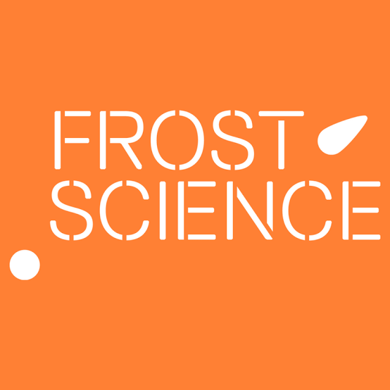
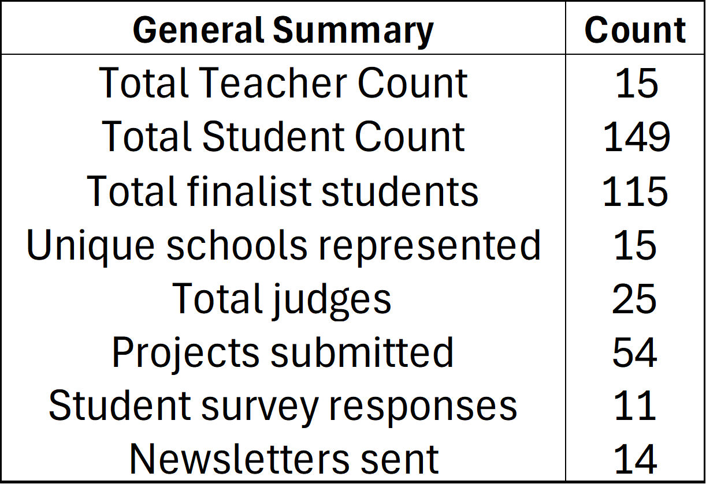
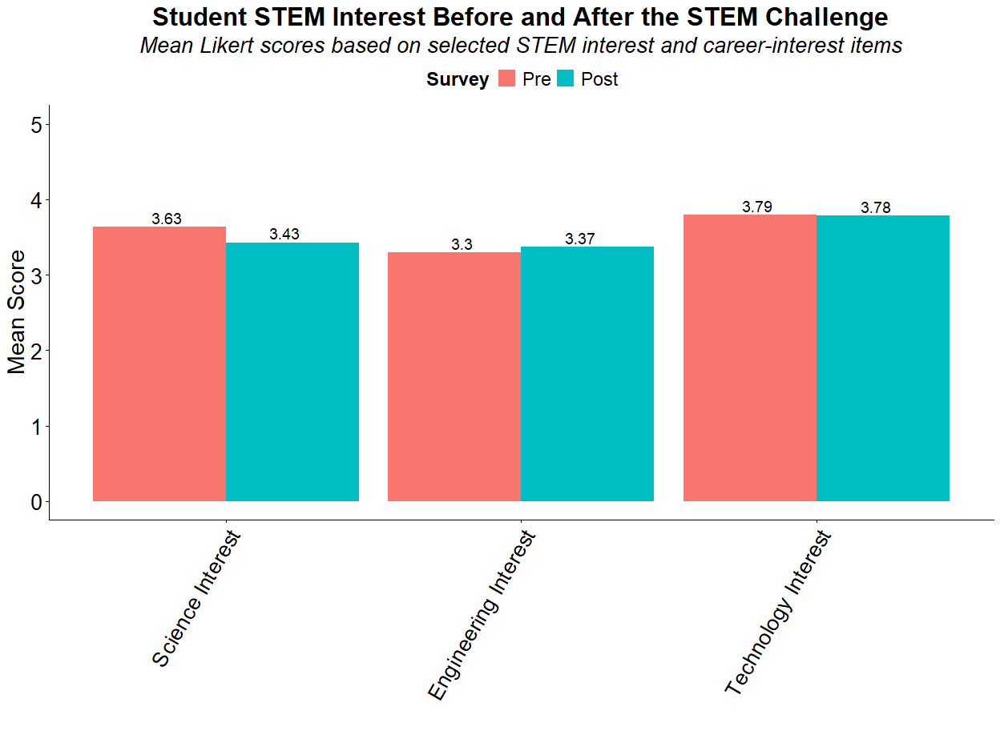
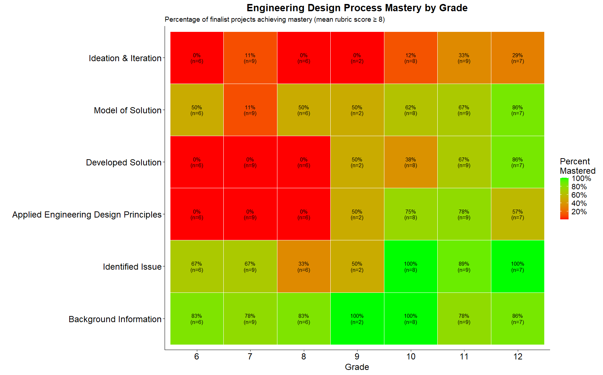

Frost Science STEM Program Evaluation

Project Overview
In this project, I worked as an external evaluator for the Phillip and Patricia Frost Museum of Science to assess outcomes associated with its STEM Challenge educational programming. The project involved organizing and analyzing program evaluation data, reviewing participant responses and performance measures, and developing clear visualizations to communicate program outcomes to museum staff and stakeholders.
Using RStudio, Excel, statistical analysis, and data visualization, I transformed program datasets into interpretable results that could be used to evaluate participation, identify patterns across groups, assess program effectiveness, and support future program planning and reporting.
Background
STEM education programs are designed to strengthen student engagement, knowledge, confidence, and exposure to science, technology, engineering, and mathematics. Program evaluation provides an important way to determine whether those goals are being achieved and to identify opportunities for improving future programming.
Frost Science collected information from program participants and schools across the STEM Challenge initiative. These datasets provided an opportunity to examine participation patterns, compare outcomes across groups, and quantify changes in key evaluation metrics.
Scenario
Frost Science needed an independent analytical review of program data to better understand the effectiveness and reach of its STEM Challenge programming. Important evaluation questions included:
- How many students, schools, and participants were reached by the program?
- What patterns were evident in participant responses and evaluation metrics?
- Did student outcomes differ across schools, groups, or program components?
- What changes were observed between pre-program and post-program measures?
- Which findings were most important for communicating program impact to stakeholders?
By organizing and analyzing the available evaluation data, I developed a clearer picture of program performance and translated the results into accessible visual products and summaries for Frost Science.
Objective
The primary objective of this evaluation was to analyze Frost Science STEM Challenge data in order to:
- Compile, clean, and organize program evaluation datasets
- Summarize participation and program reach
- Evaluate changes in key student and participant outcomes
- Compare responses and performance across relevant groups
- Develop clear figures and visualizations for reporting
- Provide data-driven findings to support future program improvement and evaluation
Ultimately, the analysis provided Frost Science with an independent assessment of program data and a set of quantitative results that could be used to communicate impact and guide future educational programming.
Results Summary
Program Reach & Participation
Analysis of program participation data provided an overview of the students, schools, and groups reached through the STEM Challenge. Summarizing participation across the program helped quantify overall reach and identify differences in engagement among participating groups.
These results provide important context for interpreting program outcomes, as the scale and distribution of participation influence how broadly the program's impact extends across the community.

Student Outcomes & Program Impact
Evaluation data were analyzed to examine changes in key participant outcomes associated with the STEM Challenge. Comparing available pre-program and post-program measures helped identify where students demonstrated changes in knowledge, confidence, interest, or other program evaluation metrics.
These comparisons provided a quantitative framework for evaluating whether the program was meeting its intended educational objectives and highlighted areas where the strongest changes were observed.

Engineering Design Process Mastery by Grade
Analysis of finalist projects revealed clear differences in Engineering Design Process mastery across grade levels. Students generally demonstrated strong mastery in identifying issues and incorporating background information, while more advanced design components such as developing solutions, creating models, and applying engineering design principles showed greater mastery among upper-grade students. Ideation and iteration remained the least frequently mastered component across all grades, highlighting a potential area for increased emphasis in future programming.
